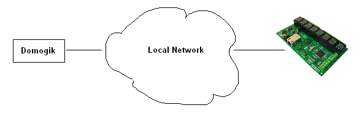
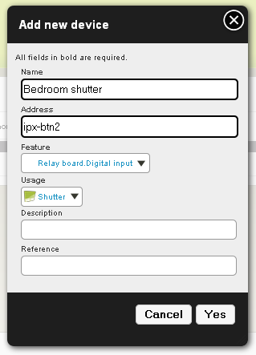
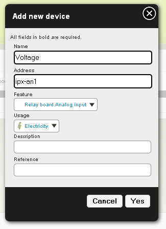
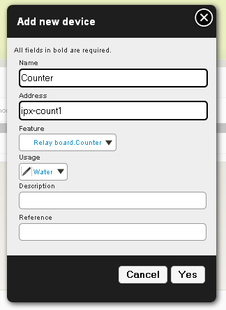

Plugin ipx800¶
Purpose¶
The IPX800 is a “web relay board” : a relay bord which can be controlled with a web interface. It can be plugged on a network, so you can access and control it from your browser.

This board exists in several version with different features:
- IPX 800 : http://www.gce-electronics.com/tcp-ip/18-serveur-ip-8-relais-ethernet.html
- IPX 800 pro : http://www.gce-electronics.com/tcp-ip/31-serveur-ip-8-relais-ethernet.html
- IPX 800 v2.0 : http://www.gce-electronics.com/40-ipx800-v200.html
This plugin handle the following features :
- relays usage and status
- digitial input status
- analog input status
- counter status (and in a futur release, counter reset)
Known issues¶
HTTP Authentication make plugin slower¶
Using HTTP authentication make plugin interactions with relay board slower. If it is not necessary for you, avoid using HTTP authentication.
How to plug¶
The IPX relay board has just to be put in your Local Area Network.
Plugin configuration¶
Enabling plugin¶
You can enable plugin by using:
dmgenplug ipx800
You just have to reload administration page to see the plugin in the list.
Configuration¶
In Domogik administration, go to ipx800 configuration page.
name¶
Name for the IPX800. This name will be used when you will create devices for your inputs or relays. Example with “ipx” name:
- relay 0 (0..7) : “ipx-led0”
- digital input 2 (0..3) : “ipx-btn2”
- analog input 1 (1..2) : “ipx-an1”
- counter 3 (0..3) : “ipx-count3”
ip¶
Ip of the IPX800. To find all availables IPX800 relay boards on network, you can use the ipx800 find helper.
int¶
Interval between each reading of IPX800 status Default : 5
login (optionnal)¶
Login for HTTP authentication.
password (optionnal)¶
Password for HTTP authentication.
Start plugin¶
You can now start the plugin (start button).
Creating devices for IPX800¶
In administration, go to Organization > Devices page to create your devices.
Relay¶
Create a new device like this :
- Name : “IPX Relay 0” (or whatever you want)
- Description : a short description (Placement, usage, etc)
- Address : <ipx name>-led<0..7>. ipx name is defined by you in plugin configuration. 0..7 is the relay number. So, if your board name is “myipx” and you want to create a device for the first relay, you should put : myipx-led0
- Reference : “IPX800” (or whatever you want)
- Usage : “Appliance”, “Light” (for example)
- Type : RelayBoard.Relay
Attribute the feature to a place and you can now see the status of your IPX800 board relay (on or off)
Example :

Digital input¶
Create a new device like this :
- Name : “IPX Digital Input 0” (or whatever you want)
- Description : a short description (Placement, usage, etc)
- Address : <ipx name>-btn<0..3>. ipx name is defined by you in plugin configuration. 0..3 is the digital input number. So, if your board name is “myipx” and you want to create a device for the first digital input, you should put : myipx-btn0
- Reference : “IPX800” (or whatever you want)
- Usage : “Shutter” (for example)
- Type : RelayBoard.Digital_Input
Example :
Attribute the feature to a place and you can now see the status of your IPX800 board digital input (up or down)
Analog input¶
Create a new device like this :
- Name : “IPX Analog Input 1” (or whatever you want)
- Description : a short description (Placement, usage, etc)
- Address : <ipx name>-an<1..2>. ipx name is defined by you in plugin configuration. 1..2 is the analog input number. So, if your board name is “myipx” and you want to create a device for the first analog input, you should put : myipx-an1
- Reference : “IPX800” (or whatever you want)
- Usage : “Electricity” (for example)
- Type : RelayBoard.Analog_Input
Note
Notice that for relay and digital input, number of item start at ‘0’ and for analog input, it starts to ‘1’. It is due to IPX800 design.
Example :
Attribute the feature to a place and you can now see the value of your IPX800 board analog input
Counter¶
Warning
counter are not well ordered in IPX800 firmware : * count1 => btn3 * count2 => btn2 * count3 => btn1 * count4 => btn0
Create a new device like this :
- Name : “IPX Counter 0” (or whatever you want)
- Description : a short description (Placement, usage, etc)
- Address : <ipx name>-count<0..3>. ipx name is defined by you in plugin configuration. 0..3 is the counter number. So, if your board name is “myipx” and you want to create a device for the first counter, you should put : myipx-count0
- Reference : “IPX800” (or whatever you want)
- Usage : “Water”(for example)
- Type : RelayBoard.Counter
Example :
Attribute the feature to a place and you can now see the count of your IPX800 board counter.
Helpers¶
To get an introduction to helpers, you can read the Helper documentation. To use a helper, the plugin must be stopped.
ipx800 find¶
ipx800 find helper will discover all available IPX800 boards on network.
$ ipx800 find
List of all IPX800 boards found :
192.168.0.102 : IPX800
192.168.0.103 : RELAYBOARD
ipx800 status <board ip> <login (optionnal)> <password (optionnal)>¶
ipx800 status <board ip> <login> <password> helper will give you status of board’s elements.
$ ipx800 status 192.168.0.102 admin pass
List of relay :
- led0 : 0
- led1 : 0
...
List of digital input :
- btn0 : up
- btn1 : up
...
List of analog input :
- an1 : 0
- an2 : 0
List of counters :
- count0 : 5
- count1 : 47
Upgrade IPX800 firmware¶
Go on GCE Electronics website
Go to your IPX800 model page. Click on “Télécharger” on bottom to see all availables downloads : .. image:: ipx800_website_download.png
Download the latest release
Extract it:
$ mkdir /tmp/ipx800 $ cd /tmp/ipx800 $ unrar e "/path/to/IPX800 V2 3.xx.xx.rar"
Download the linux utility to flash the IPX800 firmware : .. document:: flash.sh Notice that this script is also available in Domogik sources in this path : src/tools/ipx800/flash.sh.
Launch utility like this:
$ ./flash.sh /path/to/IPX800 V2 3.xx.xx/Flash/gceip3xxxx.hex
Follow script instructions
If everything went fine, you should obtain this kind of output:
$ ./flash.sh gceip30021.hex
You are about to update IPX800 board with this firmware :
- gceip30021.hex
[Enter] to continue. [ctrl]-[c] to abort.
Manual operations to do before hitting [enter] to flash board :
1. Check your computer ip is on 192.168.1.x network
2. Unplug board.
3. Wait a few minutes.
4. While plug in board, press [enter]
Start updating...
tftp> Sent 283047 bytes in 16.5 seconds
Make a hard reset on IPX800 firmware¶
A hard reset will make IPX800 relayboard going back to default settings (DHCP enabled, etc). To do this, just follow these steps :
- Unplug Ipx800 board
- Connect J2’s up pin and J92’s left pin together (see red pins in picture) .. image:: ipx800_hard_reset.png
- Plug IPX800 board
- Wait for relays clacking
- Disconnect J2 and J92 pins
- Unplug board
- Plug board
Upgrade IPX800 website¶
- Go on http://ipx800/mpfsupload/ (assuming ipx800 is associated to your ipx800 IP address). .. image:: ipx800_hard_reset_upload_site.png
- Choose website package to upload.
- Click on upload
Your IPX800’s website is updated.
Developper notes¶
Finding an IPX relay board¶
TO discover all IPX relay boards on local network, you can send the following message on UDP (port 30303):
Discovery: Who is out there?
All IPX relay boards will answser:
<name of relay board>
<mac address of relay board>
Get actual card status¶
You can get the actual status of the card with this url : http://ip:port/status.xml
This will give this xml data:
<response>
<led0>0</led0>
<led1>1</led1>
<led2>1</led2>
<led3>0</led3>
<led4>1</led4>
<led5>0</led5>
<led6>0</led6>
<led7>0</led7>
<btn0>up</btn0>
<btn1>up</btn1>
<btn2>up</btn2>
<btn3>up</btn3>
<an1>81</an1>
<an2>0</an2>
<time0>07:40:19</time0>
<count1>0</count1> # beta feature on IPX
<count2>0</count2> #
<count3>0</count3> #
<count4>0</count4> #
</response>
- ledX : status of each relay (0 => OFF, 1 => ON)
- btnX : status of each digital input (up => ON, down => OFF)
- anX : value of each analog input (0 for 0V, 1024 for 3.3V)
- countX : value of each counter (0...)
API¶
Change the relay state¶
Calling this url will change a relay state http://ip:port/leds.cgi?led=N (N=0..7)
Example :
- change relay 0 state : http://ip:port/leds.cgi?led=0
- change relay 2 state : http://ip:port/leds.cgi?led=2
Send a pulse to the relay¶
Calling this url will send a pulse to the relay http://ip:port/rlyfs.cgi?rlyf=N (N=0..7)
Example :
- send a pulse to relay 0 : http://ip:port/rlyfs.cgi?rlyf=0
- send a pulse to relay 2 : http://ip:port/rlyfs.cgi?rlyf=2
Note
Sending a pulse to a relay that is already in state 1, will only put it to state 0 after pulse duration
Reset counter – beta feature on IPX¶
Calling this url will reset a counter : http://ip:port/counter.cgi?count=N (N=0..3)
Example :
- Reset counter 0 : http://ip:port/counter.cgi?count=0
- Reset counter 2 : http://ip:port/counter.cgi?count=2
/command¶
Here are the url to use for each feature of IPX800 board. “address” is <boardname>-<element type (led, btn...)><number of element>
Switch :
- /command/relayboard/<address>/high
- /command/relayboard/<address>/low
Trigger :
- /command/relayboard/<address>/pulse
Todo
Reset counter when implemented
xPL Schema¶
xpl-cmnd¶
The COMMAND.BASIC xPL schema is used in this module : http://xplproject.org.uk/wiki/index.php?title=Schema_-_CONTROL.BASIC
CONTROL.BASIC
{
DEVICE=<device name>
TYPE=<device type>
CURRENT=<value sent to the device>
}
- device : <relay board name in plugin config>-<element : btn0, btn1...>
- type :
- output for a relay * count for the counter
- current : * HIGH, LOW, PULSE for a relay * 0 to reset counter
xpl-stat¶
There is no usage of xpl-stat with this plugin
xpl-trig¶
The SENSOR.BASIC xPL schema is used in this module : http://xplproject.org.uk/wiki/index.php?title=Schema_-_SENSOR.BASIC
SENSOR.BASIC
{
DEVICE=<device name>
TYPE=<device type>
CURRENT=<current value>
}
- device : <relay board name in plugin config>-<element : btn0, btn1...>
- type : * output for a relay * input for the digital input * voltage for the analog input * count for the counter
- current : * HIGH, LOW for a relay (there is no PULSE value here) * 0 to reset counter
A xpl-trig message is sent at each status change for board’s elements.